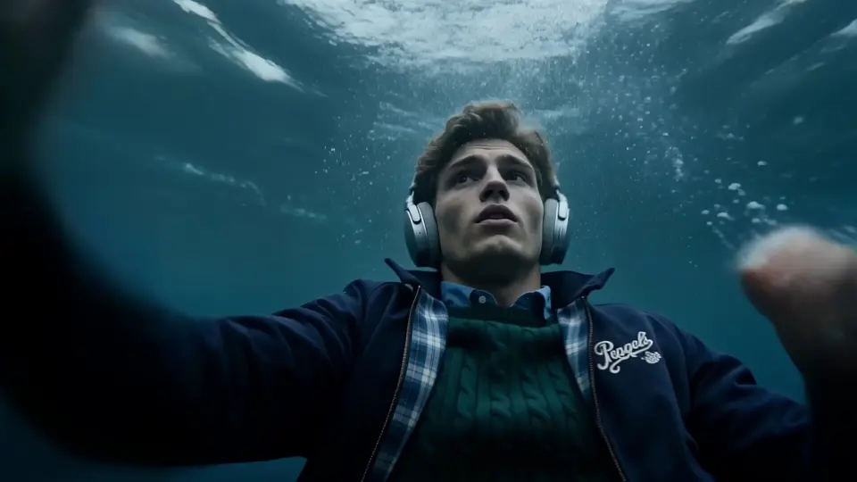
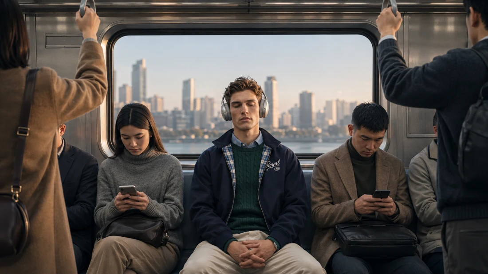

主角造型
用深色夹克、针织衫和浅色长裤建立通勤造型。银色耳机在深色服装的衬托下更容易辨认。

耳机概念广告
 去小红书观看
去小红书观看
用深色夹克、针织衫和浅色长裤建立通勤造型。银色耳机在深色服装的衬托下更容易辨认。
耳机单品图交代了头梁和耳罩的外形，成片用车厢里的佩戴近景展示产品轮廓。

水下环境图里的冷蓝色调和水面透光，对应成片中人物进入水下的镜头。


车厢画面以车窗和两侧乘客框住主角。结尾回到同一环境，呼应开场的通勤场景。
